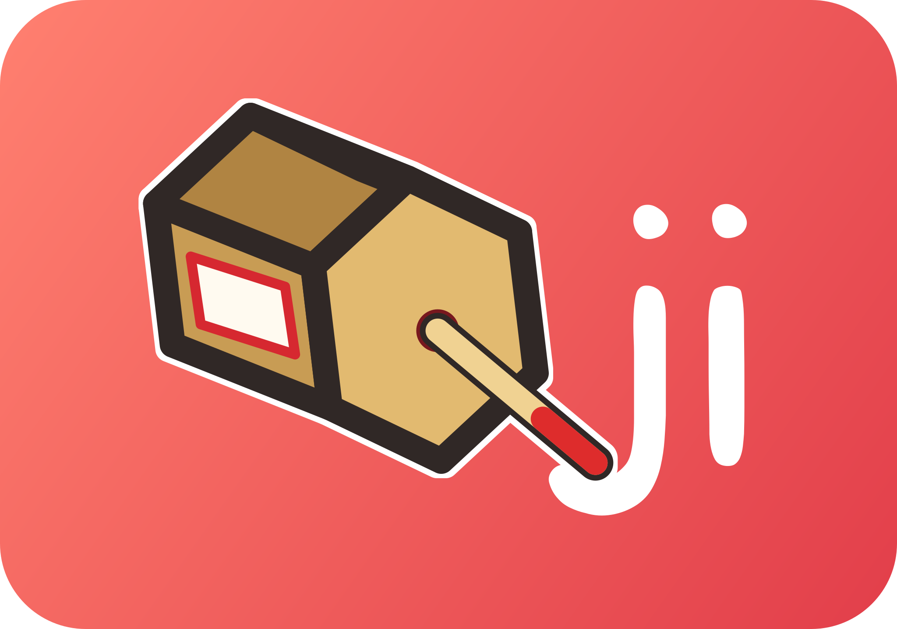

くじ

迷ったら、くじで決めよう
当番・順番・チーム分け・お題・罰ゲーム。
その場で公平に決めて、LINE で送れます。
🔍 公平に決まる仕組み
引くたびに、ランダムな「タネ」（数字）を1つ作り、そのタネと入れた名前などから結果を決めます。
「確かめるリンク」を開くと、同じタネと同じ条件でもう一度引き直すので、だれが開いても必ず同じ結果になります。あとから都合よく引き直していないことを、みんなで確かめられます。

迷ったら、くじで決めよう
当番・順番・チーム分け・お題・罰ゲーム。
その場で公平に決めて、LINE で送れます。
引くたびに、ランダムな「タネ」（数字）を1つ作り、そのタネと入れた名前などから結果を決めます。
「確かめるリンク」を開くと、同じタネと同じ条件でもう一度引き直すので、だれが開いても必ず同じ結果になります。あとから都合よく引き直していないことを、みんなで確かめられます。